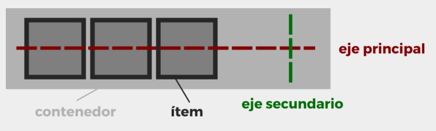
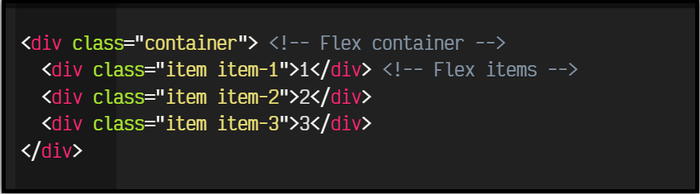
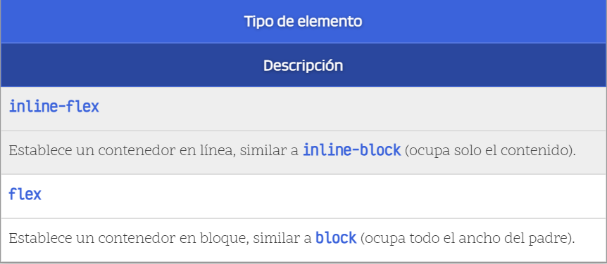
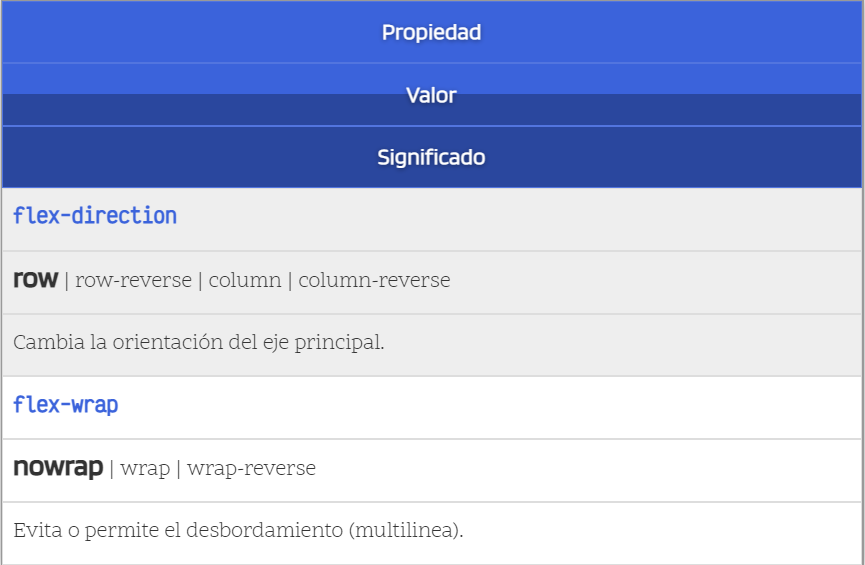
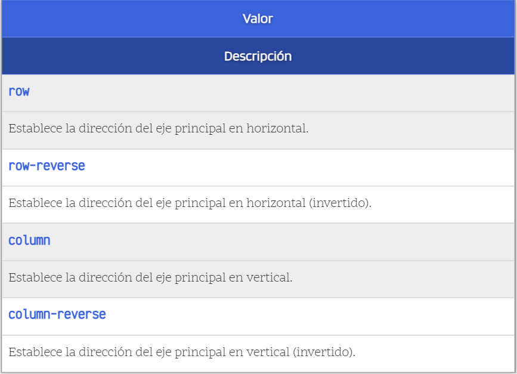
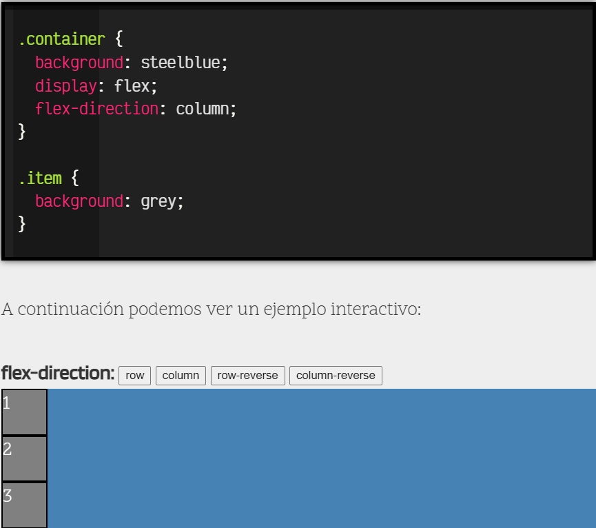
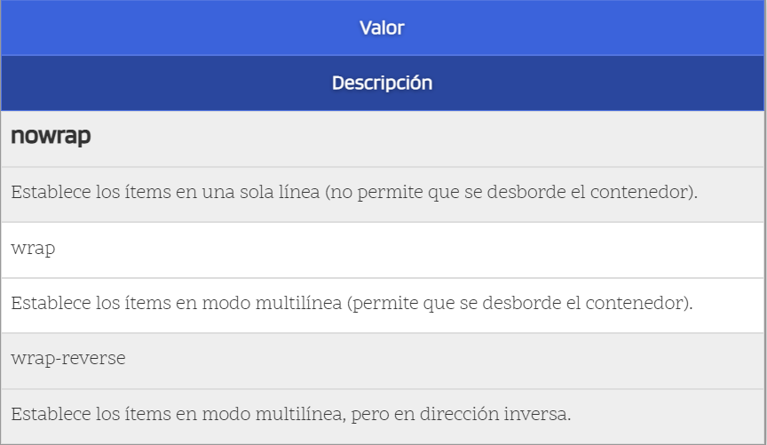

Flex Box
Tradicionalmente, en CSS se ha utilizado el posicionamiento (static, relative, absolute...), los elementos en línea o en bloque (y derivados) o los float, lo que a grandes rasgos no dejaba de ser un sistema de creación de diseños bastante tradicional que no encaja con los retos que tenemos hoy en día: sistemas de escritorio, dispositivos móviles, múltiples resoluciones, etc...
Flexbox es un sistema de elementos flexibles que llega con la idea de olvidar estos mecanismos y acostumbrarnos a una mecánica más potente, limpia y personalizable, en la que los elementos HTML se adaptan y colocan automáticamente y es más fácil personalizar los diseños. Está especialmente diseñado para crear, mediante CSS, estructuras de una sóla dimensión.
Conceptos
Para empezar a utilizar flexbox lo primero que debemos hacer es conocer algunos de los elementos básicos de este nuevo esquema, que son los siguientes:
-
Contenedor: Es el elemento padre que tendrá en su interior cada uno de los ítems flexibles. Observa que al contrario que muchas otras estructuras CSS, por norma general, en Flex establecemos las propiedades al elemento padre.
- Eje principal: Los contenedores flexibles tendrán una orientación principal específica. Por defecto, es en horizontal (en fila).
- Eje secundario: De la misma forma, los contenedores flexibles tendrán una orientación secundaria, perpendicular a la principal. Si la principal es en horizontal, la secundaria será en vertical, y viceversa.
-
Ítem: Cada uno de los hijos flexibles que tendrá el contenedor en su interior.
Una vez tenemos claro esto, imaginemos el siguiente escenario:
Para activar el modo flexbox, hemos utilizado sobre el elemento contenedor la propiedad display que vimos en Tipos de elementos, y especificar el valor flex o inline-flex (dependiendo de como queramos que se comporte el contenedor):
Por defecto, y sólo con esto, observaremos que los elementos se disponen todos sobre una misma línea. Esto ocurre porque estamos utilizando el modo flexbox y estaremos trabajando con ítems flexibles básicos, garantizando que no se desbordarán ni mostrarán los problemas que, por ejemplo, tienen los porcentajes sobre elementos que no utilizan flexbox.
Dirección de los ejes
Existen dos propiedades principales para manipular la dirección y comportamiento de los ítems a lo largo del eje principal del contenedor. Son las siguientes:
Mediante la propiedad flex-direction podemos modificar la dirección del eje principal del contenedor para que se oriente en horizontal (por defecto) o en vertical. Además, también podemos incluir el sufijo -reverse para indicar que coloque los ítems en orden inverso.
Esto nos permite tener un control muy alto sobre el orden de los elementos en una página. Veamos la aplicación de estas propiedades sobre el ejemplo anterior, para modificar el flujo del eje principal del contenedor:
Por otro lado, existe otra propiedad llamada flex-wrap con la que podemos especificar el comportamiento del contenedor respecto a evitar que se desborde (nowrap, valor por defecto) o permitir que lo haga, en cuyo caso, estaríamos hablando de un contenedor flexbox multilinea.
En el caso de especificar nowrap (u omitir la propiedad
flex-wrap ) en el contenedor, los 3 ítems se
mostrarían en una misma línea del contenedor. En ese caso, cada ítem debería tener un 50% de ancho
(o
sea, 100px de los 200px del contenedor). Un tamaño de 100px por ítem, sumaría
un total de 300px, que no
cabrían en el contenedor de 200px, por lo que flexbox reajusta los ítems flexibles para que quepan todos
en la misma línea, manteniendo las mismas proporciones.
Sin embargo, si especificamos wrap en la propiedad flex-wrap, lo que permitimos es que el contenedor se
pueda desbordar, pasando a ser un contenedor multilínea, que mostraría el ítem 1 y 2 en la primera linea
(con un tamaño de 100px cada uno) y el ítem 3 en la línea siguiente, dejando un espacio libre para un
posible ítem 4.
Referencia Bibliográfica
Flexbox CSS - CSS en español. (s. f.). Recuperado 25 de marzo de 2022, de https://lenguajecss.com/css/maquetacion-y-colocacion/flexbox/